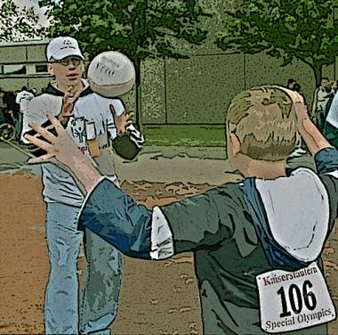

John Thomas Clark
Betside Manner
In my open tunic off to the side
clutching its flaps and the last of my pride,
I watched a slippered man wheel his trident —
bottled, tubed — down the corridor. Strident
calls roused gladiators in vee-necked shirts
and soft green paper shoes. Code Blue alerts
blared. My name shrilled. The coliseum stage,
white-toga’d hordes to probe my neurophage,
waited. Through their empirical paces,
I searched their red, imperial faces
for some kind of thumbs-up. From this forum,
I’d hoped for a mere medical quorum —
instead, all I was told, as I left my spot,
was “We’re all making bets on what you've got.”
Us and Them

What’s it about them that catches the eye
on their double-cupped ski poles hobbling by —
is it the steepled legs, or the dragging gait
that prompts obsequies? But for fortune, fate,
there we are. As we sigh a thankful prayer
they feel diminished by the thoughtless stare
of others. Each look’s a sling, an arrow
that penetrates down to the marrow
of their miles. A furtive momentary glance,
at their aeon-long curse of cosmic chance,
makes each plod they take in their wayworn tread,
that much more labored. In my downturned head,
as I place one foot, before the other,
oh, how I envy my able-bodied brother.
A retired NYC elementary shool teacher, John Thomas Clark lives in Scarsdale, NY, with his wife Ginny, his daughter Chris, his son John, and his black Labrador service dog, Lex. Currently, ninety-six of his poems are appearing in The Recorder, OCEAN, The Barefoot Muse, Byline, The Centrifugal Eye, EFQ, The Healing Muse, The Boston Literary Magazine, and twenty-eight other journals. The Joy of Lex — a light-hearted romp of eighty-two sonnets (seventeen published to date) recounting life with Lex — will be published in book form later this year with an introduction by Dean Koontz.
|